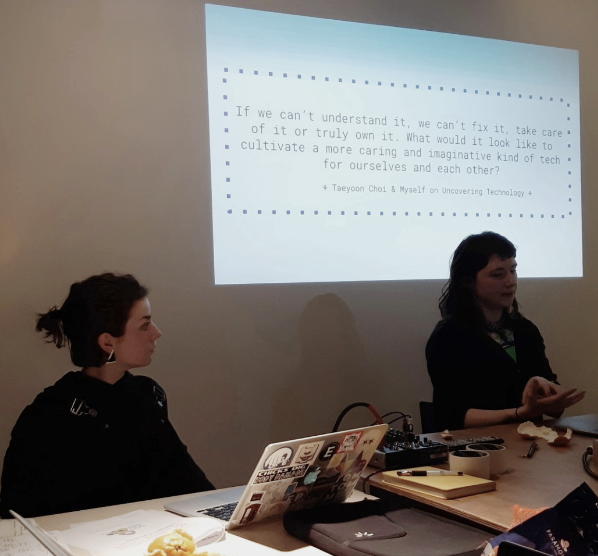
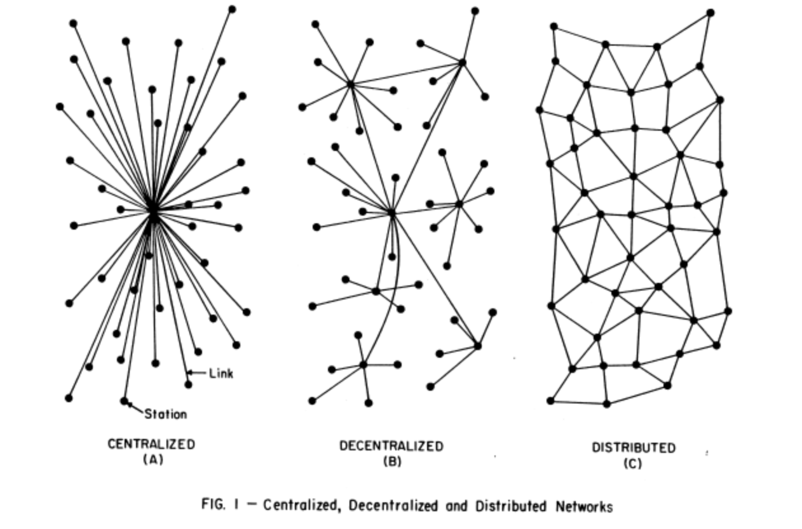
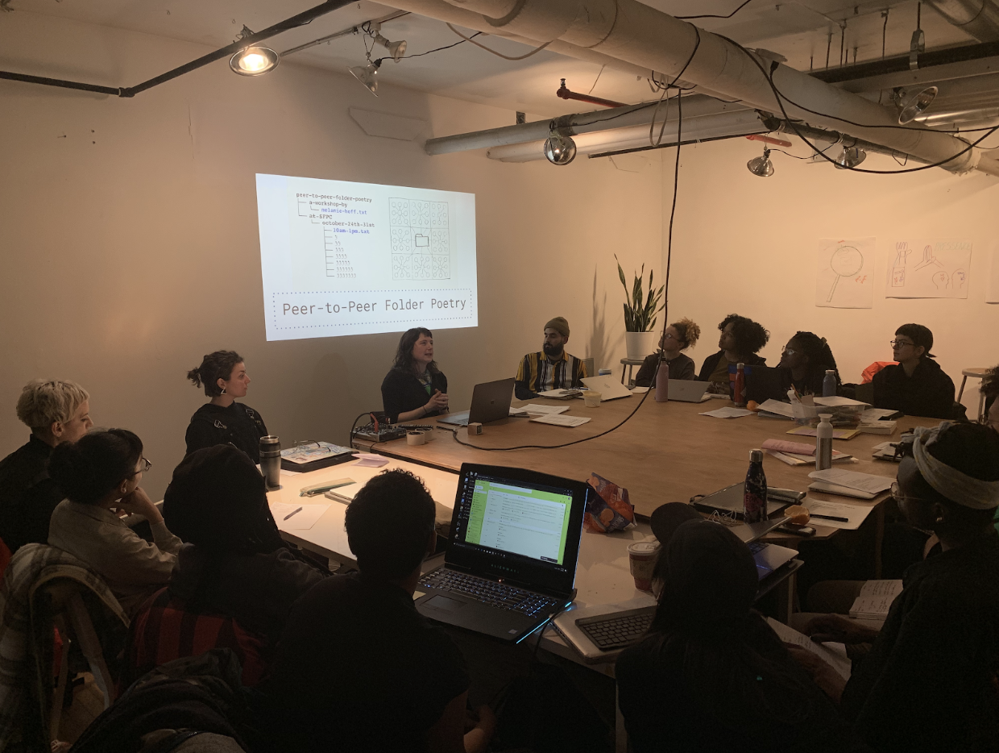
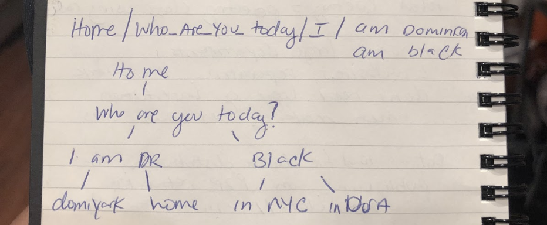
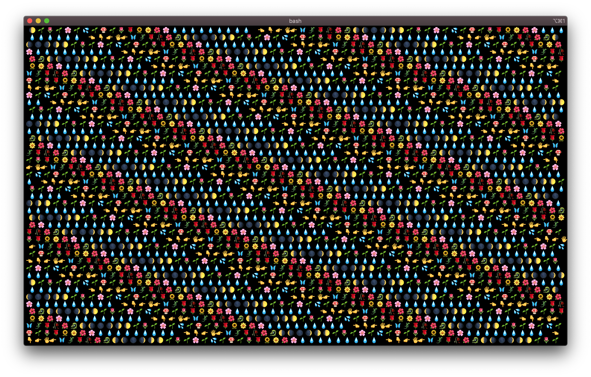
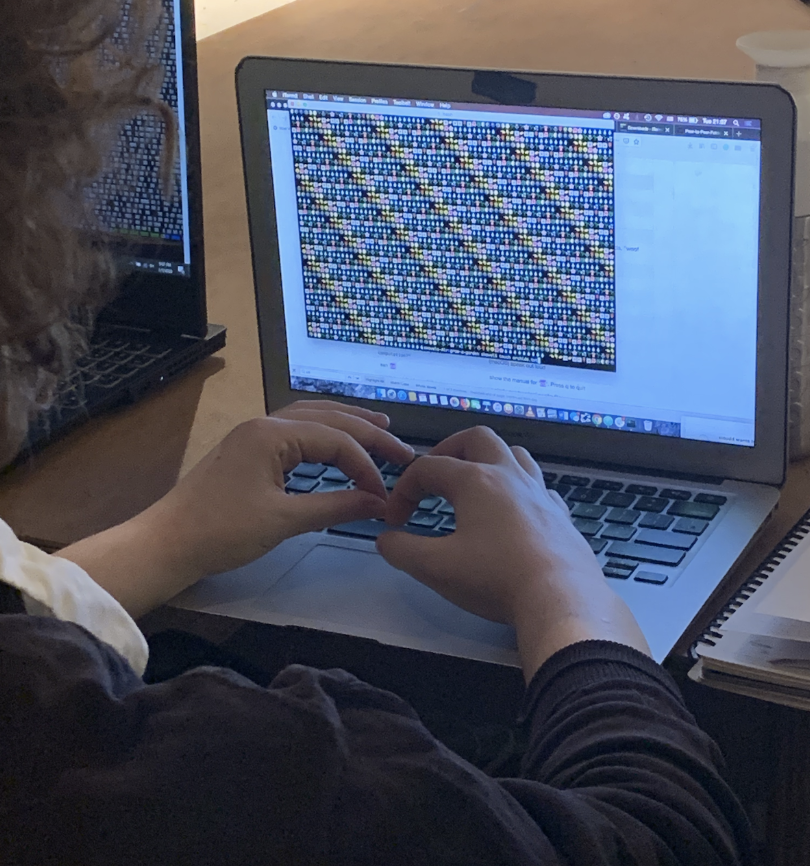

This is one of the last things said on Code Societies Day 2 and it summarizes the kind of relationship I want to have with technology as a whole. We spend hundreds of dollars on pieces of technology, only to spend more once it’s broken because we do not know how to fix them. Yet, imagine if we all had the tools to do so. What would that look like to take apart a machine, dig inside its pieces, find the problem, fix it, and get it working again? Would this un/doing happen in your home? If so, would it take place on your kitchen counter or table? Will you have music playing in the background?
The goal for Day 2 is to reintroduce ourselves to our computers using the command line to create folder poetry. To conceptualize this practice, we introduced each other to the story of our own names. Many of us were named after our parent’s imagination, religion, after our grand/fathers, jokes, sacred friendships, the military and after babysitters, a place/belonging, bureaucracy, ethnicity. Some of us named ourselves so that we aligned closer to the identity we truly feel and distance ourselves from the one imposed on us. The question of how far back do we remember a maternal name in our family is one that gutted me in particular. We didn’t get far and when security questions asks us for example, “What is your mother’s maiden name?” it’s patriarchy slapping us in the face and high-fiving capitalism, too.
This remembering of our name and our parents name provided a parallel understanding of how folder poetry works. Remember the name game, where you would say your name and repeat whoever’s name was before you? Blockchain works in the way that each time a block gets added to the chain, it holds within it the information that came before it. Hashing, a compression of the information, is a way to shorten it so that no matter how long the chain gets, you can read what is in each block even if it’s at the end of the chain.
Peer-to-Peer, or P2P is a distributed internet. It is similar to the default internet in that computers can talk to each other. With the default internet, large corporate entities hold power. Where as P2P is a network of shared ownership. So for example, because a server is simply a computer that is always powered on the internet, anyone can have a server. Virtual Private Networks, or VPN, may provide privacy but working within them can prove to be difficult as the designers and owners of the default internet ensured alternative networks couldn’t provide the same ease of accessing information.
So what’s hacking then? Hacking happens when someone remotely SSH’d into another server (remember how servers are just computers that are always on?). SSH or secure shell, is a bash script that allows you to do just that. Bash is a command language used for Linux distributions or macOS Mojave. (Can hacking, or say teleporting into someone’s computer be experienced as VR?)
How does this all relate to Day 3 at Code Societies 2020? We learned and used bash by writing folder poetry! Yes, writing folder poetry allowed us to better understand how folder organization in computers work using the Terminal. We also learned the rules to and gained Dat, or Dat://, familiarity, on how it is a tool for data distribution for publishing on P2P networks. But before we began, we made ourselves vulnerable and showed our peers how our folder organizations currently look. Some of us organized our folders in the same fashion others would organize the bookmarks in their browser Others have the desktop kind of like a junk drawer: everything goes there! In Melanie’s words, “Folder poetry is good at mapping spatial or linear concepts as well as telling a story through an unfolding narrative with forking paths.” I love the idea of a file path registering as a sentence. In this form, I/miss/you/so/much.txt is the same as I miss you so much.txt. Our homework assignment from the night before called us to imagine a speculative liberatory learning environment. What would it look like? What might we learn, experience or see? From here, we were tasked to create a file path as a sentence and a branching folder poem. I imagined a school where I wouldn’t have to code switch but instead where all parts of my identity were supported and informed. My file path then was who_are_you_today/I/am/Dominican/home.txt. Similar, another file path could also be who_are_you_today/I/am/Black/in_NYC.txt. These are two completely different experiences and potential learning environments!
After this short and sweet exercise we summoned Bash in the Terminal and practiced using key terms and commands (ls, cat & cd) to help us navigate the intimate space of our computers. We got a few sweet surprises:
 Navigating folder poems gave us new maps to access hidden treasures. Writing folder poetry allowed us to move through and within a different channel and create new paths. What also became apparent in this practice is that we’ve always been doing this regardless of our programming experience. This time, however, as we navigate our computers the distinction between user and programmer gets blurred. By becoming not only users of our computers but also programmers of them we begin to close the gap between the people who "make" computers and the people who "use" them.
written by elizabeth pérez